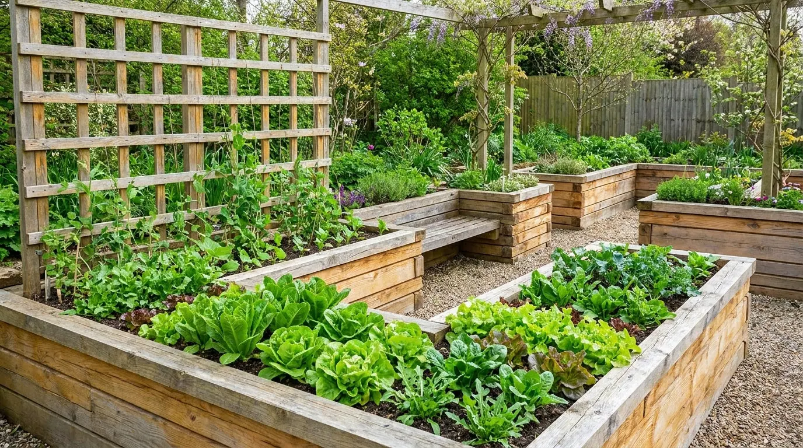
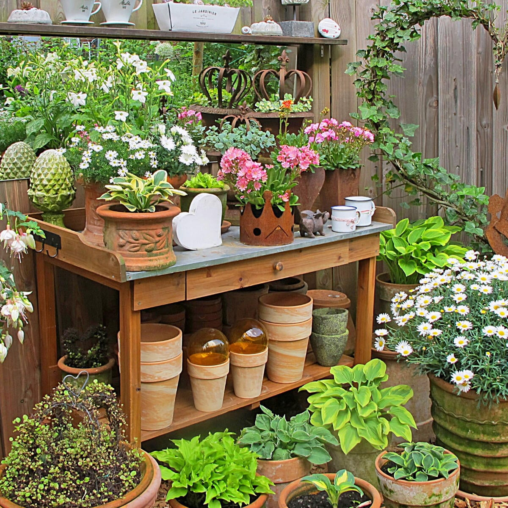
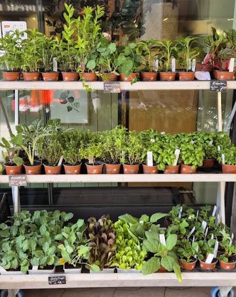
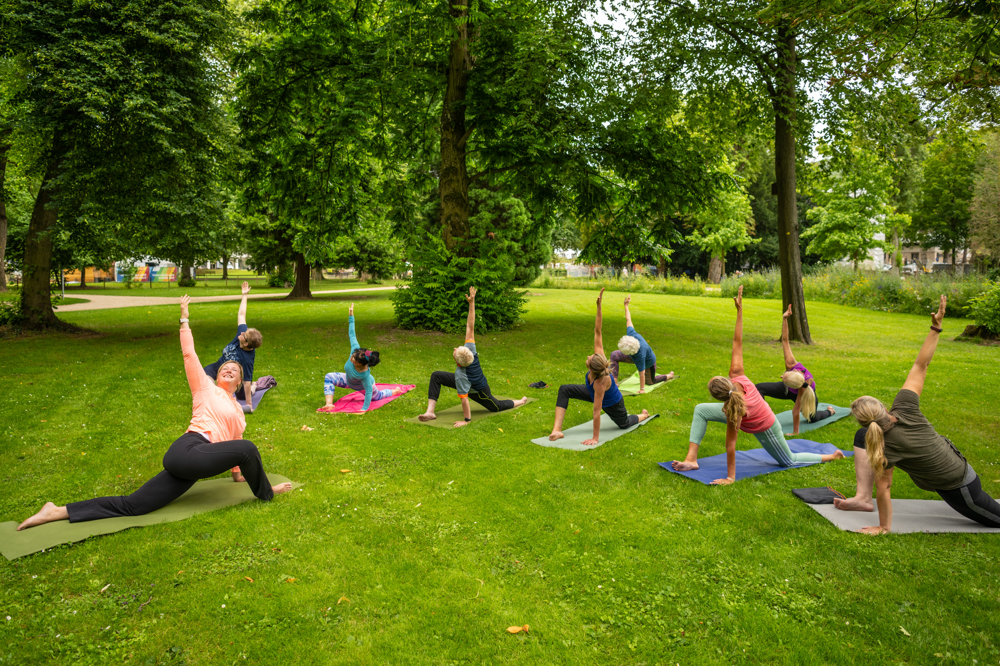

Unsere zusätzlichen Angebote
Der Stadtgarten ist mehr als nur ein Park. Entdecke unsere vielfältigen Mitmach-Angebote, Workshops und Events für Groß und Klein. Here ist für jeden Naturliebhaber etwas dabei!
| Angebot | Vorschau | Beschreibung |
|---|---|---|
| Garten-Patenschaften |
 |
Übernimm die Patenschaft für dein eigenes Hochbeet! Perfekt für Familien, WGs or Einzelpersonen ohne eigenen Garten. Wir stellen die Erde und das Basis-Saatgut, du erntest dein eigenes Bio-Gemüse. |
| Workshops & Kurse |
 |
Lerne von unseren Profis. In regelmäßigen Seminaren erfährst du alles über nachhaltige Kompostierung, den richtigen Obstbaumschnitt im Frühjahr oder die Kunst des Haltbarmachens durch Fermentierung. |
| Saatgut- & Pflanzentausch |
 |
Jedes Frühjahr treffen wir uns zum großen Austausch. Bringe deine überschüssigen Setzlinge oder gesammeltes, samenfestes Saatgut mit und tausche es gegen neue, spannende Raritäten für dein Beet. |
| Garten-Yoga |
 |
Finde deine innere Ruhe inmitten blühender Beete. Unsere zertifizierten Trainer leiten dich durch entspannende Hatha-Yoga-Stunden an der frischen Luft. Perfekt, um dem stressigen Stadtalltag zu entfliehen. |